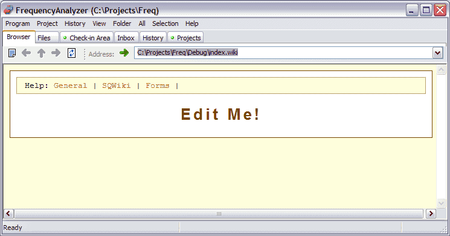

Code Co-op has a built-in browser that can display Code Co-op-controlled wiki sites. You can create your own wiki site inside a Code Co-op project by "wikifying" a folder: selecting Wikify from a Folder menu. (You can also wikify the top level folder in a project--this way the whole project becomes a wiki site.)

This image shows the results of wikifying a folder. You will notice links to wiki Help at the top of the Browser window.
The Wiki Browser is displayed automatically as soon as you enter a wikified folder from the File view or visit a wikified project. The Browser tab displays the index.wiki file present in that folder in the form of a web page. (The screen above is what you will see just after you wikify a folder.) When the page has links to other pages, you can folow these links just like in a web browser. By default, the index.wiki file created during wikification contains links to special wiki help pages at the top of the browser window, so you can quickly learn how to edit and create new wiki pages. It's really easy!
The toolbar in the Browser View contains the very important Edit button . When you click on it, the editor opens on that page, and you can start editing it on the spot. Every time you save your edits, the browser updates the view, so you have immediate feedback.
There are also the arrows for browsing control: Back, Forward, and Home, as well as a dropdown with your browsing history.
Some pre-packaged wiki sites are available at the Reliable Software web site. You can download them, add to your projects, and adapt them to your needs. One such downloadable wiki site is a very useful bug database.